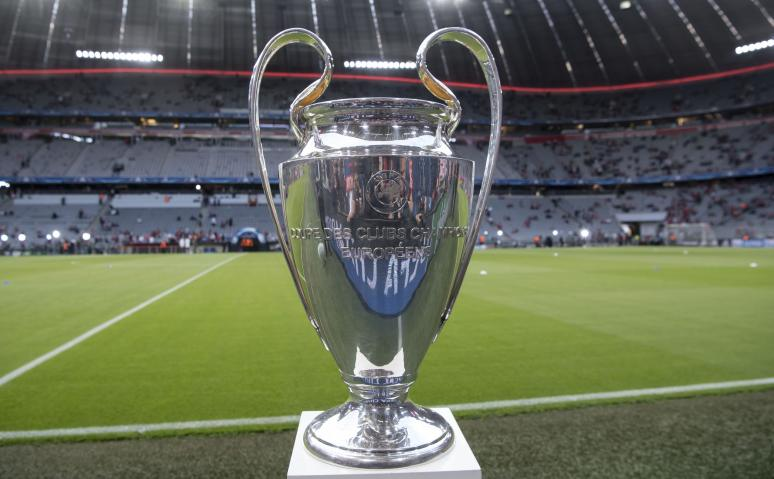
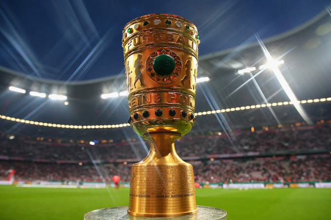
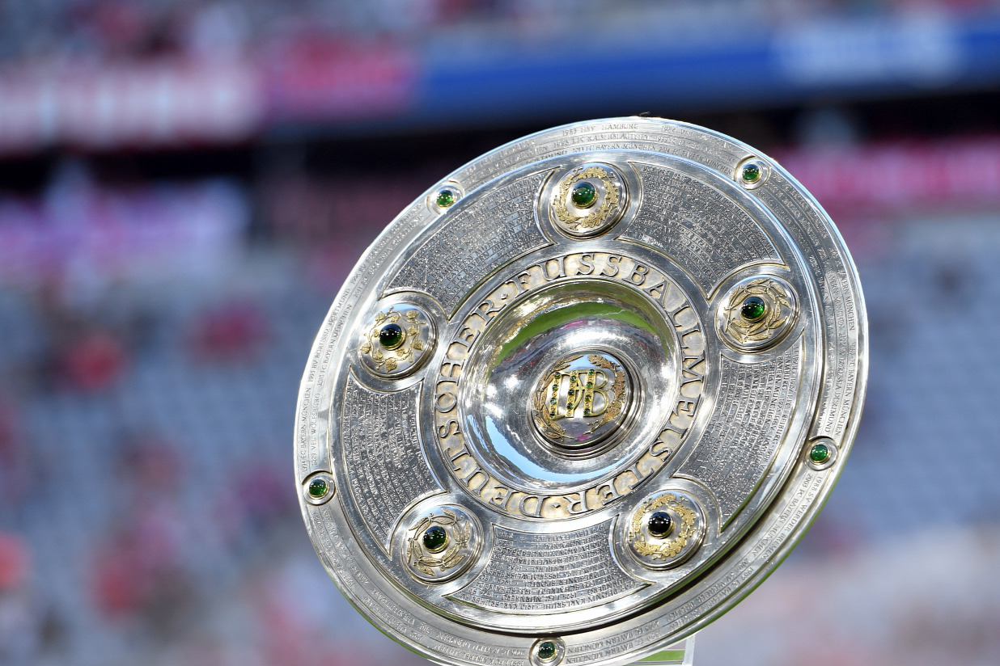

Bajnokcsapatok Európa-kupája/ UEFA-bajnokok ligája győztes (6)
 1974, 1975, 1976, 2001, 2013, 2020
Német Kupagyőztes (20)
 1957, 1966, 1967, 1969, 1971, 1982, 1984, 1986, 1998, 2000, 2003, 2005, 2006, 2008, 2010, 2013, 2014, 2016, 2019, 2020
Német Bajnokság. Bajnok (30)
 1932, 1968–69, 1971–72, 1972–73, 1973–74, 1979–80, 1980–81, 1984–85, 1985–86, 1986–87, 1988–89, 1989–90, 1993–94, 1996–97, 1998–99, 1999–2000, 2000–01, 2002–03, 2004–05, 2005–06, 2007–08, 2009–10, 2012–13, 2013–14, 2014–15, 2015–16, 2016–17, 2017–18, 2018–19, 2019–20